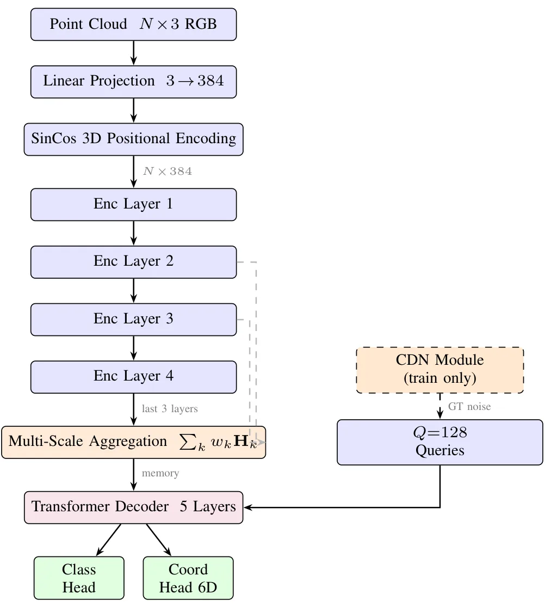
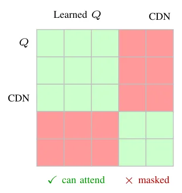
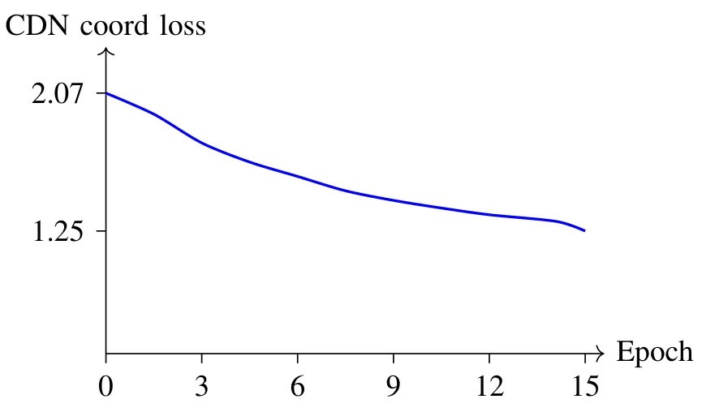
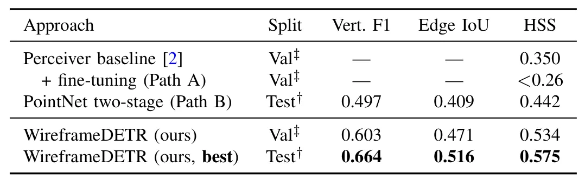

S23DR 2026：通过 DETR 式集合预测和对比去噪实现端到端 3D 线框预测S23DR 2026: End-to-End 3D Wireframe Prediction via DETR-Style Set Prediction with Contrastive Denoising
与 COLMAP 点云、建筑结构化三维重建和挑战赛基线相关；但主题偏线框拓扑提取，和 SLAM/GNSS 定位系统直接关系较弱。
一句话工作总结
WireframeDETR 从 COLMAP 点云直接预测建筑 3D wireframe 边集合，用对比去噪稳定 DETR 式 Hungarian matching。
摘要
本文介绍 WireframeDETR，作者提交给 S23DR 2026 Challenge 的技术报告。任务是从多视角 COLMAP 点云预测三维建筑 wireframe。方法将 DETR 风格 set prediction 直接应用于三维点云，把 wireframe 表示为边坐标对集合，不需要中间顶点检测阶段。三项技术贡献包括：用 contrastive denoising training 稳定早期 noisy Hungarian matching；用 multi-scale encoder 通过可学习标量权重聚合最后 encoder 层输出；用 progressive auxiliary loss weighting 把梯度信号集中到最受益的 decoder 层。模型在公开测试集上达到 HSS 0.575，对应 F1 约 0.664、IoU 约 0.516，并在清洗验证集上达到最佳 HSS 0.534。
We present WireframeDETR, our submission to the Structured Semantic 3D Reconstruction (S23DR) 2026 Challenge, which requires predicting a 3D building wireframe from multi-view COLMAP point clouds. Our method applies DETR-style set prediction directly to 3D point clouds, producing wireframes as sets of edge coordinate pairs without any intermediate vertex detection stage. We introduce three technical contributions: (1) contrastive denoising training that stabilises noisy Hungarian matching in early epochs; (2) a multi-scale encoder that aggregates the last encoder layer outputs via learned scalar weights; and (3) progressive auxiliary loss weighting that concentrates gradient signal on the decoder layers that most benefit from it. Our model achieves a public test HSS of 0.575 (F1~=~0.664, IoU~=~0.516) and a best validation HSS of 0.534 on the cleaned val split.
中文解读摘录
- 链接：abs / PDF；作者：Nitiz Khanal；类别：cs.CV；采集 score=4；S23DR 2026 Challenge 技术报告。
- 核心思路：从多视角 COLMAP 点云直接预测建筑 3D wireframe，用 DETR 风格 set prediction 输出边坐标集合，避免中间顶点检测阶段。
- 方法要点：contrastive denoising 稳定早期 Hungarian matching；multi-scale encoder 聚合最后编码层输出；progressive auxiliary loss weighting 把梯度集中到收益最大的 decoder 层。
- 关注点：与通用 SLAM/GNSS 关系较间接，但对建筑级结构化三维重建、从 SfM 点云生成拓扑线框和挑战赛基线有参考价值。
图表/页面预览

{kind=link}

{kind=link}

{kind=link}

{kind=link}
